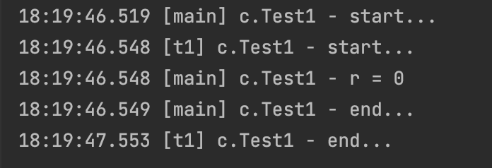
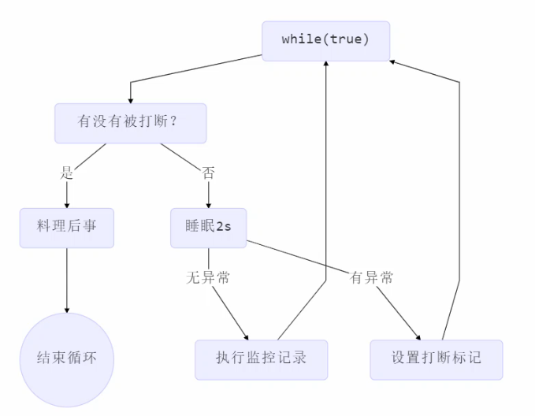
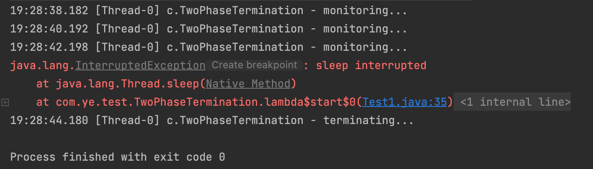

JUC-概述+线程基础
1. 相关概念
1.1 进程与线程
- 进程
程序由指令和数据组成，要运行这些指令、读写这些数据，就需要将指令加载至CPU，将数据加载至内存。在指令的运行过程中还需要用到磁盘、网络等设备。进程就是用来加载指令，管理内存，管理IO的。当一个程序被运行，从磁盘加载这个程序的代码到内存时，就开启了一个进程。
进程可以被视为程序的一个实例。
- 线程
一个进程之内可以分为一个到多个线程。一个线程就是一个指令流，将指令流中的一条条指令以一定的顺序交给CPU执行。Java中，线程是最小调度单位，进程是资源分配的最小单位。在Windows中，进程是不活动的，只作为线程的容器。
- 二者对比
- 进程基本上相互独立；线程存在于进程内，是进程的一个子集。
- 进程拥有共享的资源，如内存空间，供其内部的线程共享。
- 进程间的通信较为复杂，同一台计算机的进程通信称为IPC Inter-process Communication，不同计算机之间的进程通信需要通过网络，并遵守共同的协议，如HTTP；线程的通信较为简单，因为它们共享进程内的内存，比如多个线程可以访问同一个共享变量。
- 线程更轻量，线程上下文切换的成本一般比进程上下文切换的成本要低。
1.2 并发与并行
- 并发 Concurrent
在系统是单核CPU的情况下，一个时间段中有多个线程在进行操作，但因为只有一个core，任务调度器将CPU的运行时间划分为多个时间片，分给不同的线程使用，在一个时间片的线程操作时，其他线程处于挂起状态，这称为并发。
- 并行 Parallel
当系统是多核CPU的情况下，线程的操作有可能是非并发的。当一个CPU执行一个线程时，另一个CPU可以执行另一个线程，两个线程互不抢占CPU资源 ，可以同时进行，这称为并行。
1.3 同步与异步
- 同步 Sync
如果方法需要等待结果返回，才能继续运行，这叫同步。
- 异步 Async
如果方法不需要等待结果返回，就能继续运行，这叫异步。
2. Java线程
2.1 创建和运行线程
方法一：使用Thread
1 | Thread t = new Thread(){ |
方法二：使用Runnable配合Thread
把线程和任务（要执行的代码）分开，Thread代表线程，Runnable代表可运行的任务。
1 | Runnable runnable = new Runnable() { |
使用Lambda精简代码：
1 | Runnable runnable = () -> { |
使用Runnable更容易与线程池等高级API配合，而且让任务类和Thread形成一种组合关系，而不是继承关系，更加灵活。
方法三：使用FutureTask配合Thread
FutureTask可以接受Callable类型的参数，用来处理有返回结果的情况。
1 | FutureTask<Integer> task = new FutureTask<>(new Callable<Integer>() { |
2.2 线程运行原理
栈与栈帧
JVM由堆、栈、方法区组成，其中栈内存是给线程使用的，每个线程启动后，虚拟机就会为其分配一块栈内存。每个栈由多个栈帧Frame组成，对应每次方法调用时所占用的内存。每个线程只能有一个活动栈帧，对应着当前正在执行的那个方法。
每个线程的栈内存是独立的，互不干扰。
线程上下文切换 Thread Context Switch
因为以下一些原因，导致CPU不再执行当前线程，转而执行另一个线程的代码，此时会发生上下文切换：
- 线程的CPU时间片用完。
- 垃圾回收。
- 有更高优先级的线程需要运行。
- 线程自己调用了 sleep / yield / wait / join / park / synchronized / lock 等方法。
发生上下文切换时，需要由操作系统保存当前线程的状态，并恢复另一个线程的状态，Java中对应的概念就是程序计数器Program Counter Register，它的作用是记住下一条JVM指令的执行地址，是线程私有的。
状态包括程序计数器、虚拟机栈中每个Frame的信息，如局部变量、操作数栈、返回地址等。
Context Switch的频繁发生会影响性能。
2.3 常见方法
| 方法名 | 功能 | 备注 |
|---|---|---|
| start() | 启动一个新线程，在新线程中运行run方法中的代码 | start方法只是让线程进入就绪状态，里面的代码不一定立刻运行（CPU时间片还没分给它）。每个线程对象的start方法只能调用一次，调用多次时会报错IllegalThreadStateException。 |
| run() | 新线程启动后会调用的方法 | 如果在构造Thread对象时传递了Runnable参数，则线程启动后会调用Runnable中的run方法，否则默认不执行任何操作。但可以创建Thread的子类对象，来覆盖默认行为。 |
| join() | 等待线程运行结束 | |
| join(long n) | 等待线程运行结束，超时时间n毫秒 | n毫秒内没结束就不等了 |
| getId() | 获取线程int类型的id | id唯一 |
| getName() | 获取线程名 | |
| setName(String s) | 修改线程名 | |
| getPriority() | 获取线程优先级 | |
| setPriority(int n) | 修改线程优先级 | Java中规定优先级是1～10的整数 |
| getState() | 获取线程状态 | Java中线程状态用六个enum表示，分别是NEW, RUNNABLE, BLOCKED, WAITING, TIME_WAITING, TERMINATED |
| isInterrupted() | 判断是否被打断 | 不会清除打断标记 |
| isAlive() | 判断线程是否存活 | |
| interrupt() | 打断线程 | 如果被打断的线程正在sleep / wait / join，会导致被打断的线程抛出InterruptedException，并清除打断标记；如果打断正在运行的线程，则会设置打断标记；park的线程被打断，也会设置打断标记。 |
| static interrupted() | 判断当前线程是否被打断 | 会清除打断标记 |
| static currentThread() | 获取当前正在执行的线程 | |
| static sleep(long n) | 让当前执行的线程休眠n毫秒，休眠时让出CPU的时间片给其他线程 | |
| static yield() | 提示线程调度器让出当前线程对CPU的使用 | 主要是为了测试和调试 |
2.3.1 sleep与yield
- sleep
- 调用sleep会让当前线程从Running进入Timed_Waiting状态（阻塞状态，不会拿到时间片）。
- 其他线程可以使用interrupt方法打断正在睡眠的线程，这时sleep方法会抛出InterruptedException。
- 睡眠结束后的线程未必会立刻得到执行。
- 建议用TimeUnit的sleep代替Thread的sleep来获得更好的可读性：
TimeUnit.SECONDS.sleep(1)==Thread.sleep(1000)
- yield
- 调用yield会让当前线程从Running进入Runnable状态（非阻塞状态，有可能拿到时间片），然后调度执行其他同优先级的线程。如果这时没有同优先级的线程，那么不能保证让当前线程暂停的效果。
- 具体的实现依赖于操作系统的任务调度器。
- 线程优先级
优先级Priority会提示hint任务调度器优先调度优先级高的线程，但它仅仅是一个提示，调度器可以忽略它。
如果CPU比较繁忙，那么优先级高的线程会获得更多的时间片，但CPU空闲时，优先级几乎没用。
yield和线程优先级其实都只是对任务调度器的提示，对于线程的调度不可控不可靠，实际上每个线程分到多少时间片还是取决于任务调度器如何调度线程。
sleep的应用：防止CPU占用100%
做服务器端的应用程序时，需要服务器端不断地运行来接收请求、访问响应，这种时候就会用到while(true)。但如果不对while循环做处理，就会导致循环空转浪费CPU资源，这时可以用sleep防止占用过高。
1 | new Thread() -> { |
可以用wait或条件变量达到类似效果，但是这两种方法需要加锁，而且需要相应的唤醒操作，一般适用于要进行同步的场景，sleep适用于无需锁同步的场景。
2.3.2 join
为什么需要join？
举例：有一个静态变量r=0，线程t1启动后休眠1秒，主线程启动后直接打印r的值。
1 | public class Test1 { |
结果：

分析：
因为主线程和线程t1是并行执行的，t1线程需要1秒之后才能给r赋值r=10，而主线程一开始就要打印r的结果，所以只能打印出r=0。
解决方法：
在线程t1启动后，让t1执行join方法。
1 | t1.start(); |
主线程需要等待t1线程结果返回才能继续向下运行，称主线程在同步等待t1线程。
join的底层就是wait。
2.3.3 interrupt
如果interrupt打断了一个正在sleep / wait / join的线程，那么isinterrupted()返回的布尔值是false，即清除了打断标记。
如果interrupt打断一个正常运行的线程，isinterrupted()返回的布尔值是true，即会设置打断标记，而且线程会继续正常执行下去。如果想要在打断线程后停止线程，可以通过打断标记进行判断：
1 | public static void main(String[] args) throws InterruptedException { |
2.3.4 两阶段终止模式 Two Phase Termination
如何在线程T1中优雅地终止线程T2？优雅指的是，不立刻杀死线程T2，而是给它善后的机会（释放锁等关键资源）。
错误思路：
- 使用stop()停止线程。stop方法会真正杀死线程，如果这时线程锁住了共享资源，那么它被杀死后就再也没有机会释放锁，其他线程永远无法获得锁。
- 使用System.exit(int)停止线程。我们的目的仅是停止一个线程，这种做法会让整个程序停止。
例：要做一个系统健康状态监控的程序，每隔2秒记录一次系统状态。
利用一个后台的监控线程，在while(true)循环里每隔2秒记录一次。需要一个停止的机制，不想继续监控的时候可以让程序停止下来。

其中，因为interrupt一个睡眠中的进程会清除打断标记，所以在捕获interruptedException之后设置一个打断标记，在下一次进入循环后进行终止。
实现：
1 |
|
结果：

2.4 主线程与守护线程
默认情况下，Java进程需要等待所有线程都运行结束，才会结束。也就是就算主线程结束了，但是如果线程t1还没有结束，进程就不会结束。
守护线程是一种特殊的线程，只要其他非守护线程运行结束了，即使守护线程的代码没有执行完，守护线程也会被强行结束。
通过t1.setDaemon(true)来设置某一个线程为守护线程。
常见的守护线程就是GC垃圾回收器线程。
2.5 线程的状态
从不同的角度来看，线程可以被分为不同的状态。
- 从操作系统的角度来描述，线程有五种状态。
- 初始状态：仅在语言层面创建了线程对象，还未与操作系统线程关联。
- 可运行状态：相当于就绪状态。指该线程已经被创建，与操作系统线程关联，可以被CPU调度执行。
- 运行状态：指获取了CPU时间片，运行中的状态。运行状态和可运行状态可以相互转换，当时间片用完，就会转换至可运行状态，得到时间片，就会转换至运行状态，同时会导致线程的上下文切换。
- 阻塞状态：如果调用了阻塞API，比如BIO读写文件，这时该线程不会使用CPU，会导致线程上下文切换，进入阻塞状态。等BIO操作完毕，由操作系统唤醒阻塞的线程，转换至可运行状态。在阻塞状态的线程被唤醒之前，调度器不会考虑调度阻塞状态的线程。
- 终止状态：表示线程已经执行完毕，生命周期已经结束，不会转换为其他状态。
- 从Java API的角度来描述，线程有六种状态。
- NEW：线程刚被创建，但还没有调用start()方法。
- RUNNABLE：调用start()方法，进入RUNNABLE状态，相当于涵盖了操作系统层面的可运行、运行、阻塞状态。
- BLOCKED：阻塞状态，比如先执行的一个线程对类上锁后进入等待状态，后执行的线程获得不了锁，就会进入这种状态。
- WAITING：等待状态，join()是一种例子。
- TIMED_WAITING：有时限的等待状态，sleep()是一种例子。
- TERMINATED：相当于终止状态，代表线程代码运行结束。
BLOCKED、WAITING、TIMED_WAITING都是Java API层面对阻塞状态的细分。